2) PROCESS SW 개발


01. 프로그램 한눈에 보기
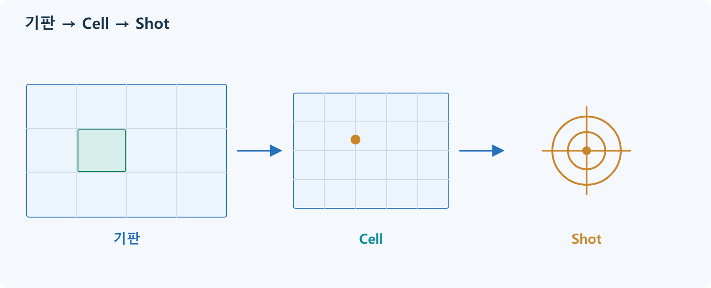

02. 장비 역할과 공정 흐름

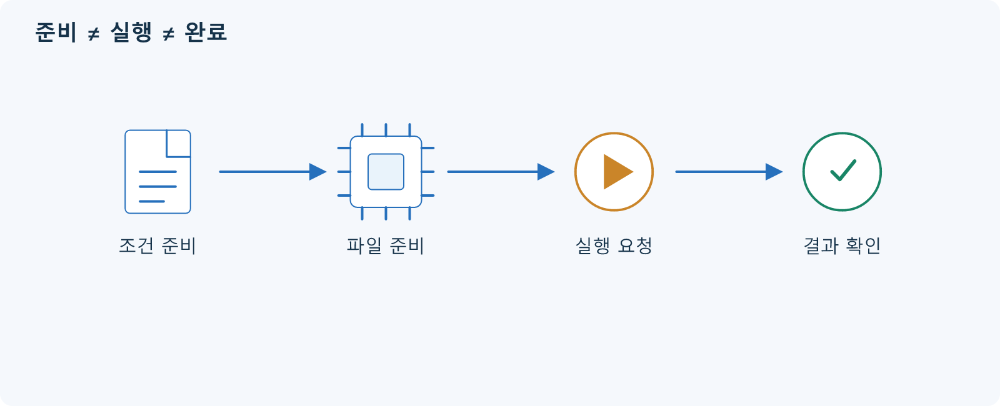
03. 프로그램 구조와 실행 데이터
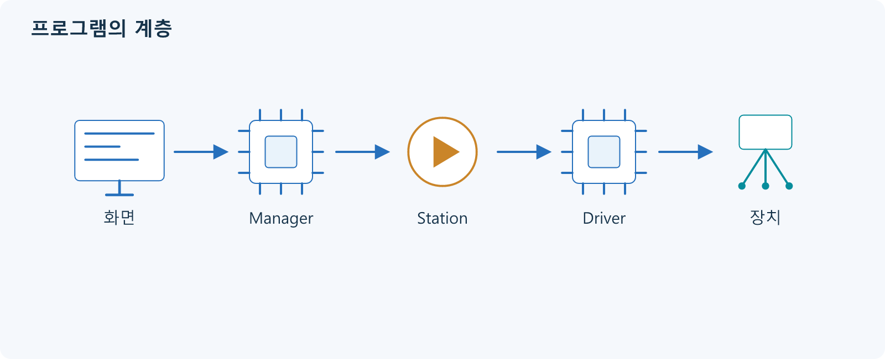
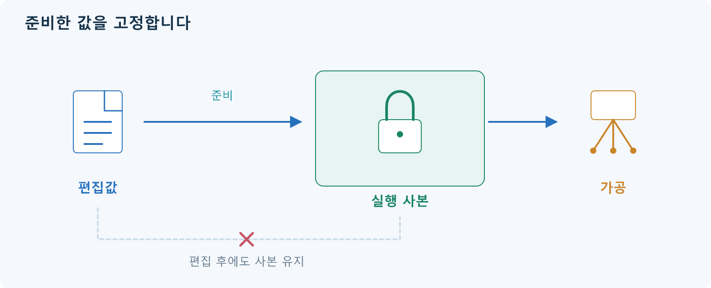
04. 실행 준비와 설정 관리
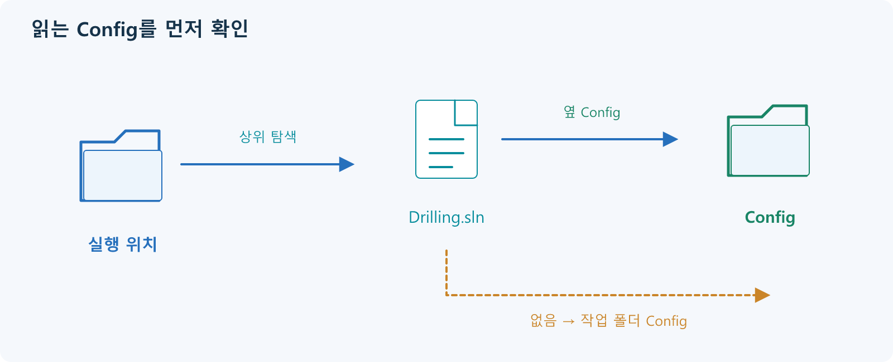
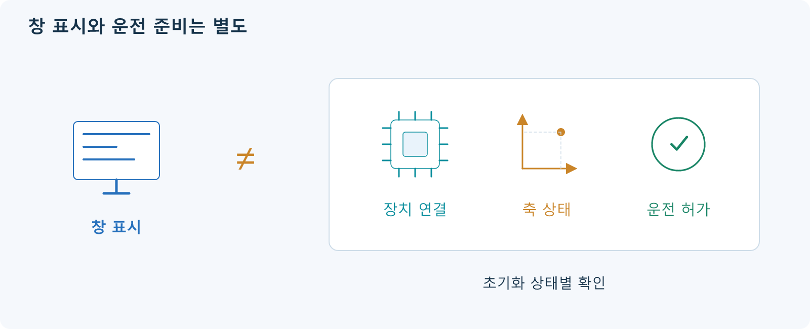
05. Recipe·PPID·운전 조건

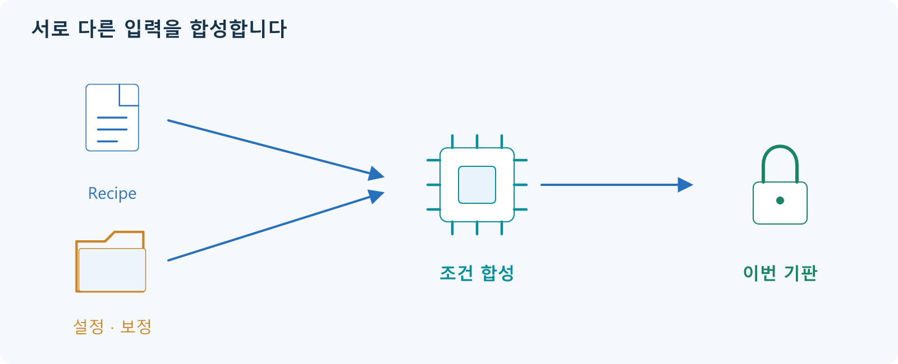
06. 좌표 변환과 Head 분담


07. Scanner·MOF 실행


08. Align·Review·검사·보정


09. 통신과 장비 인터페이스
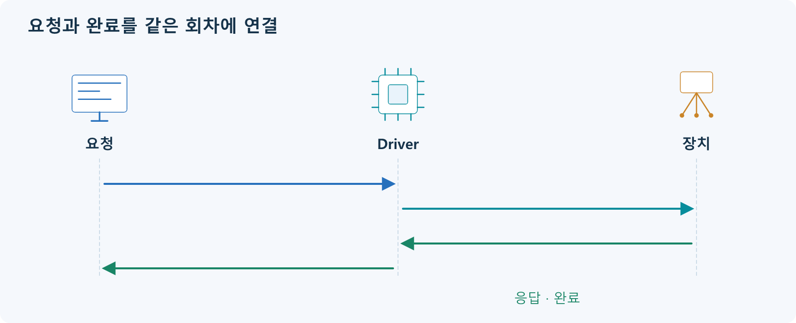

10. 광학 장치와 Power 측정
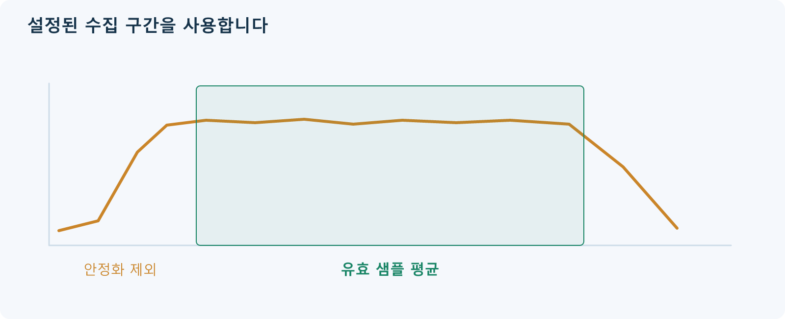

11. 운전 화면과 Manual·Auto


12. Alarm·Interlock·Stop·Reset


13. 개발 시험과 결과 확인

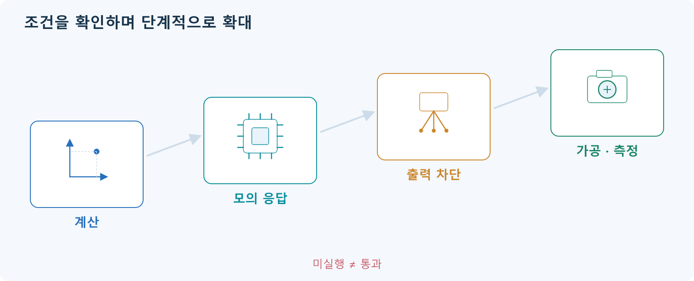
14. 현재 기능과 개발 확인사항
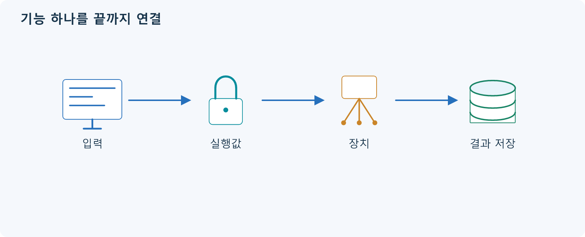
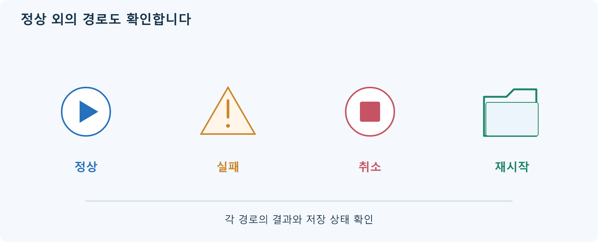
15. 증상별 개발 확인


16. 데이터 관리와 변경 반영